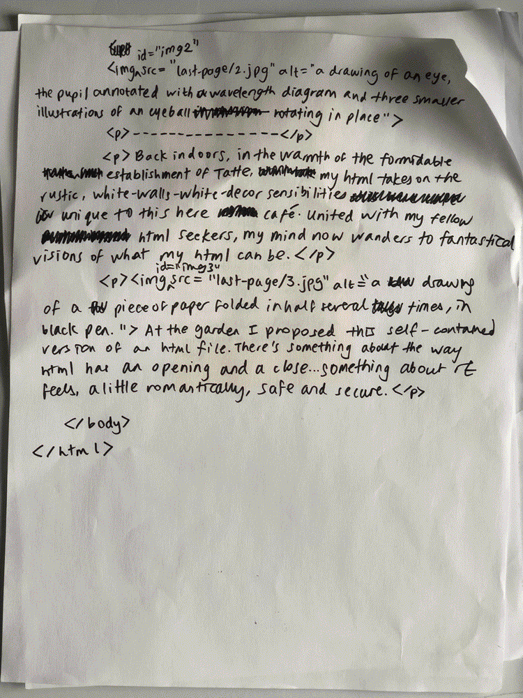
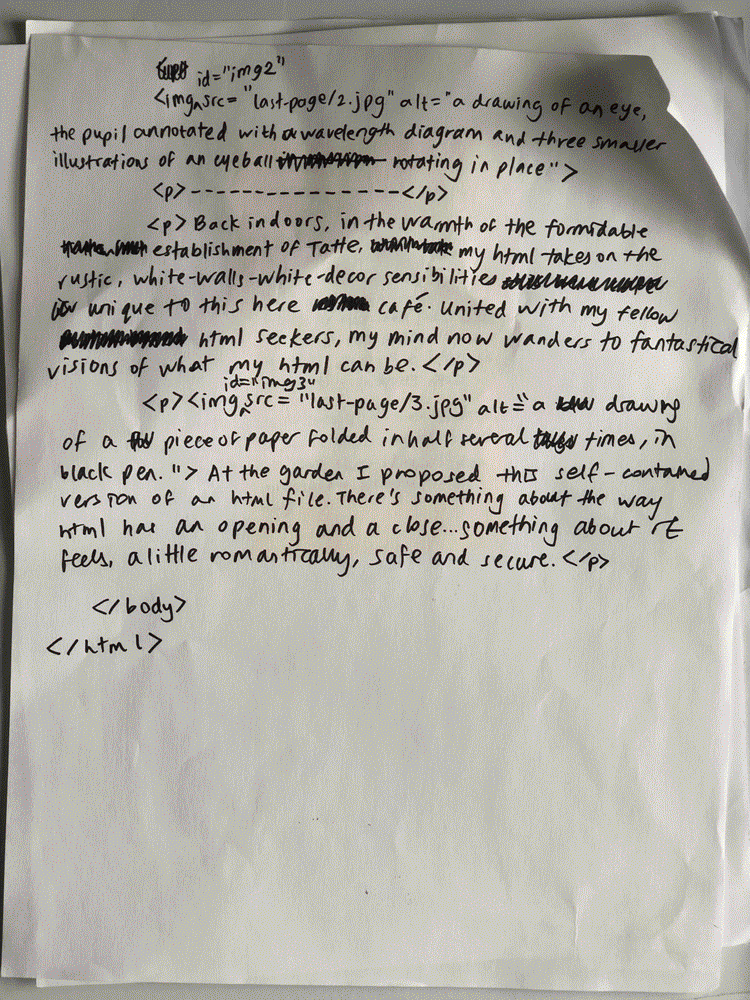

Video description: a person unfolds a piece of paper folded in half several times. The front and back of the unfolded paper are each notated with an opening and closing HTML tag. Unfolding the paper, the person gets to the body of the HTML.
![three drawings, successively titled '1.jpg', '2.jpg', and '3.jpg' in black ink on a piece of white paper, bubbling from having been in the rain. the first image is 'a platonic (ideal?) figure of a bird', a simple line drawing of a bird and its head moving about. the second drawing is of an eye both still and in motion, rotating in place. a sub-drawing shows the eye in profile, lines extending from the eyelids and lashes to encompass a wavelength drawing. the third drawing is of a piece of paper folded in half several times, with some handwritten html just barely showing.](twentythree/20230603/html1-2.png) 

Video description: three yellow sticky notes, each full of text, placed in the center of a piece of paper. Each sticky note is placed flush under the next, slightly nested. A hand flips through the notes, which together form a single HTML comment.